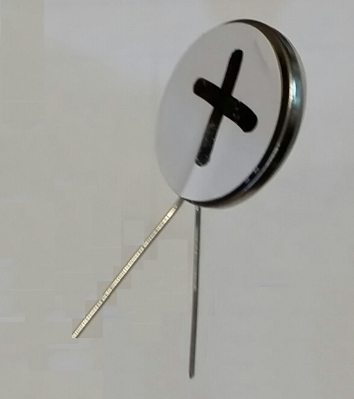

In our previous project (YOUR FIRST CIRCUIT), we built the following circuit using a battery, an LED and a resistor:

We’re now going to build that same circuit again, but this time using the breadboard on our RaspberrySTEM CREATOR Kit. We'll need all three components from the previous project (pictured above), plus the two bare wires (silver wires about 1" in length) and the two round adhesive white dots. All of these parts are included in the Your First Circuit RaspberrySTEM Cell bag. In addition, you're going to need a single green "jumper wire" -- this is a half-inch long green wire that is in a small plastic bag packaged inside of a larger bag of wires.
If you haven't read USING THE BREADBOARD, we highly recommend you do so now. You'll need that information for not only this projects, but for all future projects as well -- from here on out, everything we build will be on our breadboard.
Hopefully, you've also read YOUR FIRST SCHEMATIC and have a general idea of how a schematic works. Here is the example we used in that lesson, which also happens to be the schematic of our first circuit (pictured above):

To implement that design (or any design) on our breadboard, we will follow the schematic from power (the + terminal of the battery) to ground (the - terminal of the battery), inserting each component along the way.
Let’s look at this step-by-step:
We discussed in USING THE BREADBOARD how we can power our circuits in any number of ways. While the RaspberrySTEM CREATOR Kit itself can provide power to the breadboard and the circuits that are on the breadboard -- and we'll be using the RaspberrySTEM CREATOR Kit for power starting in the next project -- we want to give you an example of how other power sources can be used instead.
So, for this project, we're going to use the 3V lithium battery that we used in YOUR FIRST CIRCUIT to power our first breadboard circuit.
To use the 3V battery as the "power supply" for the breadboard in this project, we need to modify it a bit so that it can "plug into" the breadboard. The first step in doing that is to attach one of the bare wires to the (+) side of the 3V battery using one of the adhesive white dots. We also recommend writing a (+) sign on the white dot so we can remember which side of the battery is the (+) side. We'll need this information later.
Next, we want to attach the other bare wire to the (-) side of the battery using the other adhesive white dot.
At this point, you should have something that resembles this:
This is going to serve as our power supply for this project. And we're now ready to start building our circuit...
If you follow the schematic starting from the battery, the first component you hit is the battery itself. Here is that part of the schematic:

In other words, the first step in breadboarding your circuit is to hook up the power supply (that we created in Step #1 above) to the breadboard. To do this, we first want to take the silver wire that is attached to the (+) side of the battery and insert it into one of the holes along the red strip of the breadboard rail. Then, we want to take the silver wire that is attached to the (-) side of the battery and insert it into one of the holes along the adjacent blue strip.
Note: It may be a little difficult to get the wires into the breadboard holes, as these wires aren't specifically made for this purpose. But, this will be the last project where we're using the battery, so it doesn't matter if the wires bend or don't look very good. Also note that the wires are short, so it's quite likely the battery will be sticking up in the air once the wires are inserted into the breadboard.
This is what your breadboard should look like:

Note: You'll want to ensure that the two bare wires are not touching each other, as that would "short" the battery (meaning that the electric current would run from the (+) terminal of the battery directly to the (-) terminal of the battery, and quickly drain all the power.
The wire attached to the (+) side of the battery is your power, and because all holes in the red rail strip are connected together, we have now provided power to that entire row of the breadboard. The wire attached to the (-) side of the battery is your ground, and because all holes in the blue strip are connected together, we have now provided ground that entire strip of the breadboard.
If we following the schematic around the loop, the next component we come to is the resistor, which is attached to the (+) terminal of the battery:

In the YOUR FIRST CIRCUIT project, we learned that by touching the components together, we complete the circuit and allow electric charge to flow. The breadboard allows us to do the exact same thing (complete the circuit) but in a way that doesn't involve the components directly touching.
Remember that we said earlier that the entire strip of holes along the red rail is connected together and the entire strip of holes along the blue rail is connected together? What this means is that if you plug a component into one of the holes along the red strip (or blue strip) and then plug another component into another hole along the red strip (or blue strip), those components are effectively touching each other. In actuality, they are connected by a piece of metal underneath the breadboard, but because metal conducts electric current (allows it to flow), it is no different than those components directly touching one another.
So, to connect the resistor to the (+) side of the battery like in our schematic, we need to plug one side of the resistor (one lead of the resistor) into the same strip as the wire attached to the (+) side of the battery. That's the red strip. If we insert one lead of the resistor into the red strip, we've now made a connection between the (+) side of the battery and the resistor.
In the next step, we're going to want to connect the other lead of the resistor to another component, so for the time being, we can insert that other resistor lead into any other connect strip (one of the 5-hole strips) on the breadboard. We'll come back to it soon.
Here is what the breadboard should now look like:

Note: Don't be afraid to bend the resistor leads as necessary -- that's what they're made for!
Following the schematic around further, the next component we get to is the LED:

We want to connect one lead (specifically the longer lead) of the LED to the second lead of the resistor. In the last step, we inserted the second lead of the resistor into one of the 5-hole connect strips, and as we learned earlier, all five holes in a connect strip are connected together. So, to connect the lead of the LED to the lead of the resistor, all we need to do is insert the LED lead into one of the other holes in the same connect strip that the resistor is plugged into.
Then, in preparation for the next step, we can plug the other lead of the LED into any other 5-hole connect strip on the breadboard. This is about what your breadboard should look like now:

If we continue to follow our schematic around the loop, you'll see that the final step is to connect the second lead of the LED to the (-) terminal of the battery:
We know that the second lead of the LED is now connected to all the holes in the connect strip that it's inserted into, and we also know that the (-) terminal of the battery is connected to the entire blue strip along the breadboard rail. So, to connect the second lead of the LED to the (-) terminal of the battery, all we need to do is to connect any of the holes in that connect strip to the blue rail strip using a wire.
Take one of the green half-inch wires and use it to connect the second lead of the LED to the blue rail strip, like this:

Note: You may need to press the edges of the green wire pretty firmly to get them fully inserted into the breadboard. You'll know that they are fully inserted when the entire green wire is touching the breadboard.
If everything is wired correctly, your circuit should be completed, electricity should be flowing, and your LED should be lit!
Congratulations...you just built your first circuit using a breadboard!